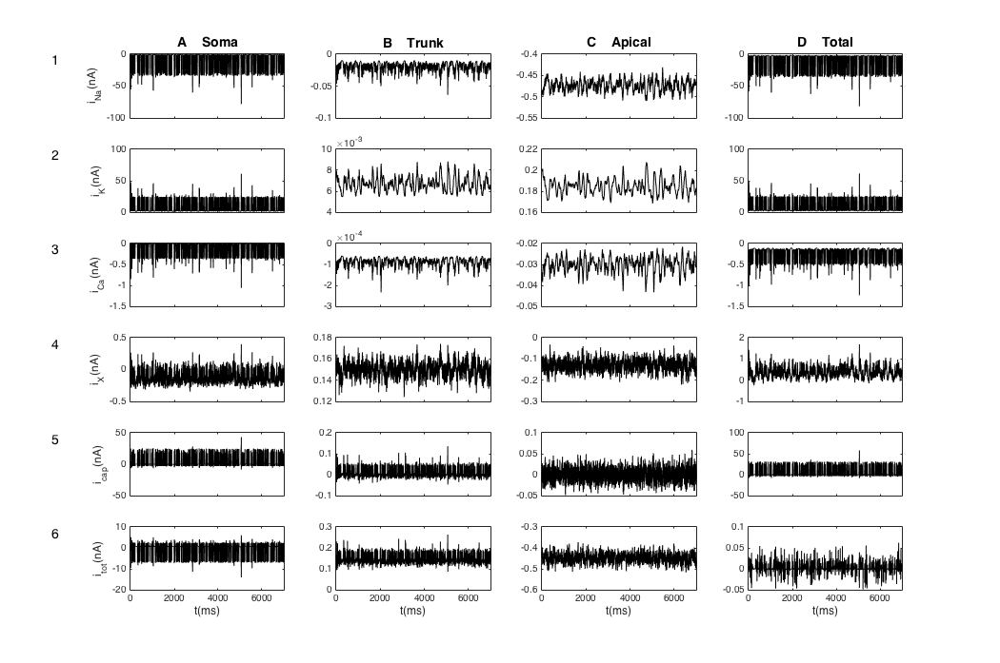
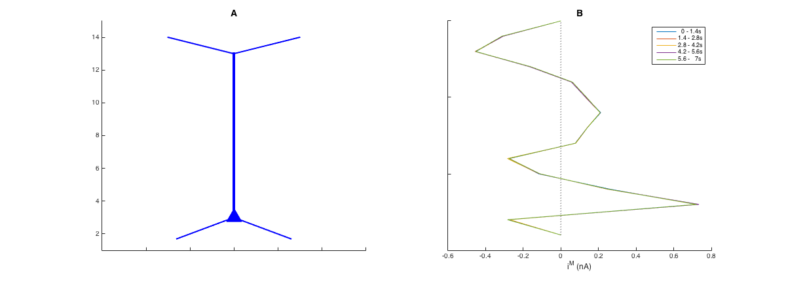
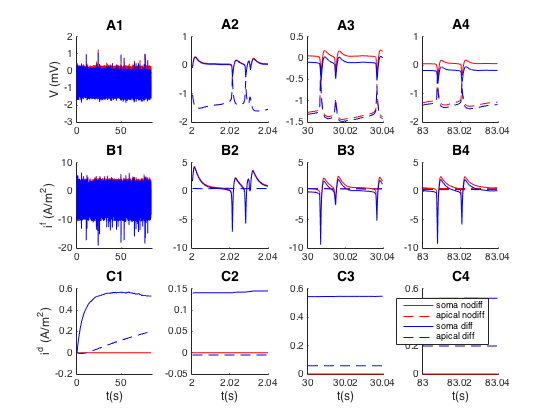
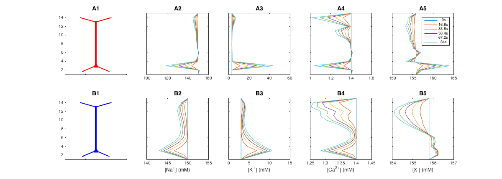
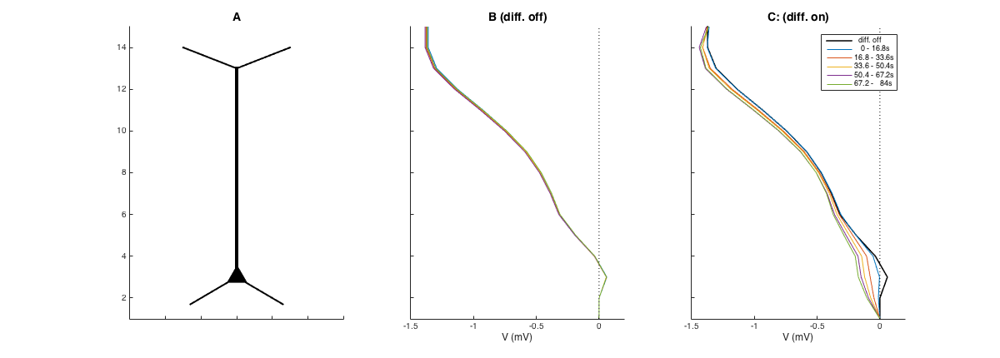
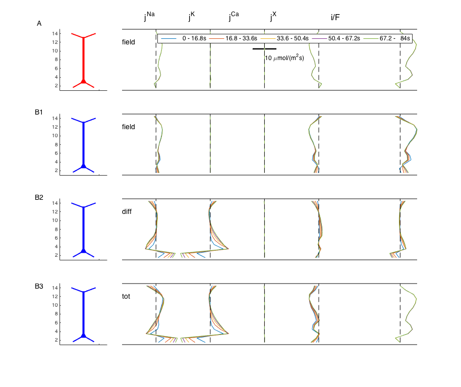
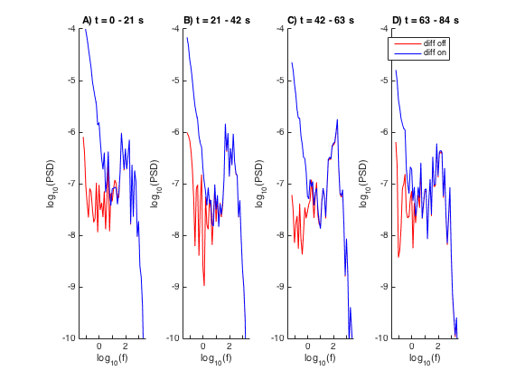
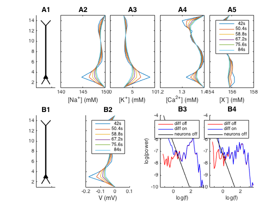

Matlab files for the article: Halnes G, Maki-Marttunen T, Keller D, Pettersen KH, Andreassen OA, Einevoll GT (2016). Effect of Ionic Diffusion on Extracellular Potentials in Neural Tissue. PLoS Comput Biol 12(11): e1005193 http://dx.doi.org/10.1371/journal.pcbi.1005193 This archive was contributed by G Halnes. The article presents a modelling study performed in two steps. First, the NEURON-simulator was used to compute the output time series of a population of ten pyramidal neurons. Next, this output was used as "input" to a MATLAB-simulation of the extracellular dynamics of the electrical potential and ion concentrations (K+, Na+, Ca++ and an unspesified negative ion X-) surrounding the population of neurons. The MATLAB code: mosinit_n_rev.m runs the extracellular simulation for a given neuronal output time series. In order for mosinit_n_rev to run, the data file revdata.mat must be found in the same folder. The file revdata.mat is made available for users from the below link: https://senselab.med.yale.edu/ModelDB/data/225311/revdata.mat so that the extracellular simulations (MATLAB code) can be run without re-running the simulations of neuronal output (NEURON code). mosinit_n_rev.m runs three simulations, each covering 84 s of biological time. The results are saved in the files (1) 'Sim_diffon.mat', (2) 'Sim_diffoff.mat' and (3) 'Sim_dead.mat'. These files contain all simulation data, and are called by mosinit_n_rev when results are plotted. These simulations represent cases with (1) diffusion present in the extracellular space, (2) diffusion not present in the extracellular space, and (3) diffusion present, but neurons turned off halfway in the simulation, i.e., after 42 s. The total simulation time (i.e. the time to run all three simulations) should be about 1-3 hours on a regular laptop (3 hours on a 2011 laptop). Eight figures from the paper are generated by mosinit_n_rev.m: Figure 2:  Figure 3:  Figure 4:  Figure 5:  Figure 6:  Figure 7:  Figure 8:  Figure 9:  The NEURON code: For users who want to compute the neuron output data, the NEURON-code used to generate revdata.mat is made available for users. To run this (and generate the revdata.mat file), use the NEURON-code and instructions found in the folder haymod_sumcurr.